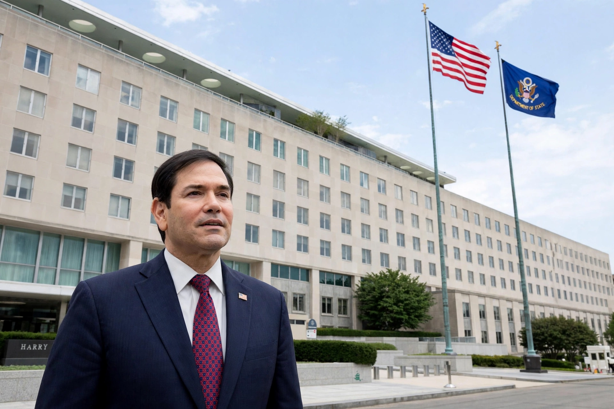

| United States Secretary of State | |
|---|---|
 | |
| Department | Department of State (est. 1789) |
| Appointer | President, with Senate advice and consent |
| First holder | Thomas Jefferson (1790) |
| Succession | Fourth in line to the presidency |
| Residence office | Harry S. Truman Building, Washington, D.C. |
The United States Secretary of State is the head of the United States Department of State and the principal cabinet officer responsible for the conduct of American foreign policy. The secretary is the president's chief adviser on foreign affairs, oversees the nation's diplomatic missions and Foreign Service, and is generally regarded as the most senior member of the Cabinet — the first in order of precedence among cabinet secretaries and fourth in the presidential line of succession, after the vice president, the Speaker of the House and the president pro tempore of the Senate.
The office was created in 1789 as an adaptation of the earlier Secretary of Foreign Affairs under the Articles of Confederation; Thomas Jefferson became the first to serve under the Constitution, taking office in 1790. The "State" portfolio originally included numerous domestic duties — custody of the Great Seal of the United States, the census, patents and copyrights — most of which were progressively transferred to other departments, leaving the modern focus on foreign affairs. The secretary negotiates and signs treaties (subject to Senate ratification), represents the United States at the United Nations and international conferences, protects American citizens abroad, issues passports, and administers foreign assistance programs through subordinate agencies. The Department of State is headquartered at the Harry S. Truman Building in the Foggy Bottom neighbourhood of Washington, D.C. — hence "Foggy Bottom" as a metonym for American diplomacy.
Six secretaries of state went on to become president: Jefferson, Madison, Monroe, John Quincy Adams, Van Buren and Buchanan — in the early republic the post was the recognised stepping-stone to the presidency. Other celebrated holders include John Marshall, William H. Seward (who negotiated the Alaska Purchase), Charles Evans Hughes, George C. Marshall (architect of the Marshall Plan and the only secretary to win the Nobel Peace Prize while associated with the role), Dean Acheson, John Foster Dulles, Henry Kissinger (a central figure in the opening to China and détente), George Shultz, Madeleine Albright (the first woman to hold the office, 1997), Colin Powell (the first African American, 2001), Condoleezza Rice and Hillary Clinton. The secretary is appointed by the president and confirmed by the Senate; the deputy secretary of state is the office's second-in-command.
See also: Disenfranchisement · Voting rights in the United States · Department of State